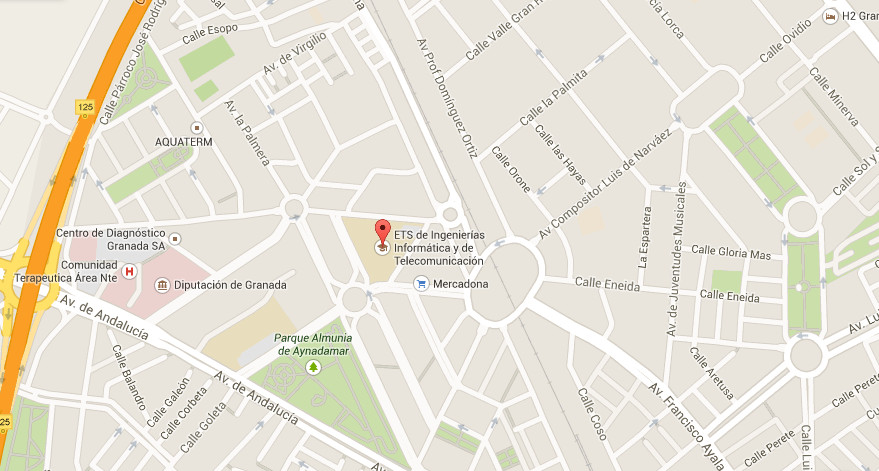

Cómo llegar
Granada se encuentra situada en la comunidad autónoma de Andalucía en el sur de España.
El congreso se realizará en la E.T.S. de Ingeniería Informática y de Telecomunicación. Este edificio se encuentra situado en la Calle Periodista Daniel Saucedo Aranda s/n (CP 18014) dentro del barrio de la Chana en Granada Capital.
El siguiente plano muestra la ubicación exacta (Coordenadas GPS: 7°11'48.1"N 3°37'28.3"W / 37.196689, -3.624534):
Granada cuenta con diferentes medios de transporte a través de los cuales se puede llegar a la ciudad:
-
Estación de autobuses, en las afueras del centro, en la zona norte de la capital. Trayecto estación de autobuses -> ETSIIT
-
Estación de ferrocaril situada en la capital, cercana al centro administrativo de la Caleta. Trayecto estación de ferrocaril -> ETSIIT
-
Aeropuerto situado en el término municipal de Santa Fé, a 17 Km. (10 minutos) de la capital. Trayecto aeropuerto -> ETSIIT